| 日付 | 2022年10月23日（日） |
|---|---|
| 山域 | 御坂･天子山塊 |
| メンバー | 家族（妻、長男・9歳） |
| 山行形態 | 子連れ日帰り |
| アクセス | 車 |
| ルート (Map) | いやしの里根場 (9:01) - (10:45) 鍵掛峠 - (11:46) 王岳 (12:19) - 林道終点 (13:00) - (13:32) いやしの里根場 |
2ヶ月振りの山登り。
ここ最近、息子のスポーツの練習やら試合やらで
全く山に行けない日々が続いた。
それはそれで楽しい日々ではあったが、たまには山も登りたい。
息子が手を痛め、それをきっかけに自主練が中止になったため、
この機会に山に行くことにする。
幸い天気も良さそうなので、富士山の見える王岳に行くことにする。
いやしの里根場の駐車場に車を停める。標高920m。
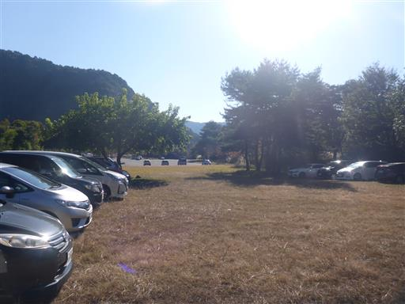
この辺りは紅葉が始まっていて、真っ赤に染まっている木が見られる。
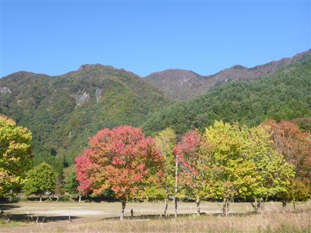
茅葺屋根の集落が再建されている。
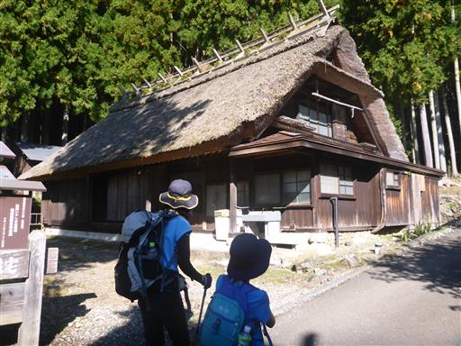
根場からは富士山がきれいに見える。
4年前に鬼ヶ岳に登った時と変わらない景色だ。
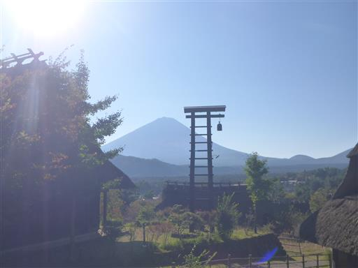
最初は林道のような広い道を歩いていく。
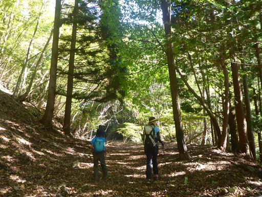
登山口に到着。
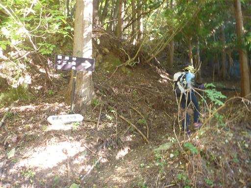
樹林帯の中を歩く。紅葉にはまだ早いようだ。
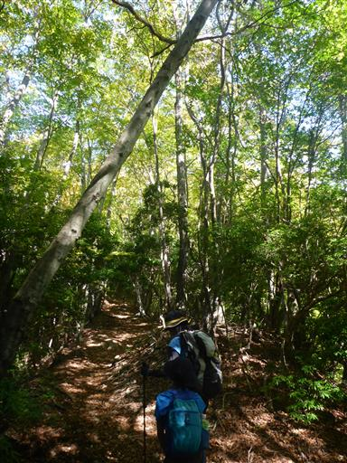
ドングリがたくさん落ちている。芽を出し始めている。
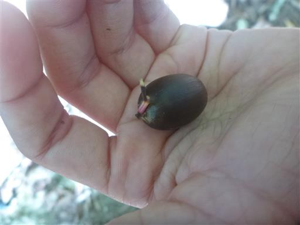
一輪だけ咲いている、まだ小さなトリカブト。
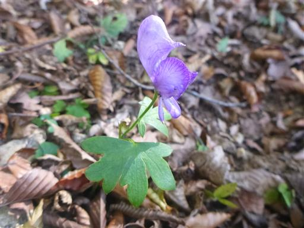
岩の上に石碑のようなものが見えるが、なんだろう？
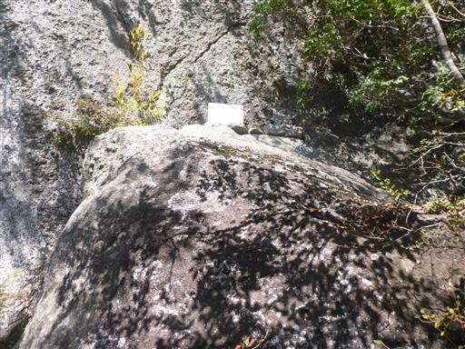
標高を上げると、少しずつ葉が色付いてくる。
久し振りの山で調子が上がらないのか、息子は終始不機嫌だ。
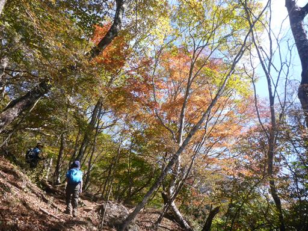
鍵掛峠に到着。
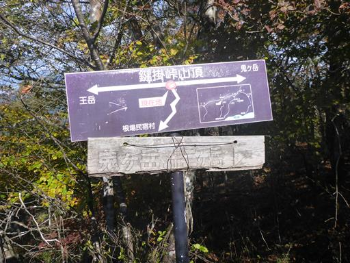
ここからの富士山は樹木に隠され、あまりすっきりとは見渡せない。

ここから王岳まで尾根道を歩く。
少々岩がちな尾根道だが、難易度は高くない。
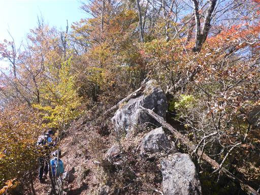
富士山の展望ポイント。まだ冠雪はしていないようだ。
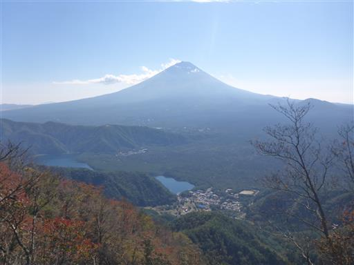
サルノコシカケ。
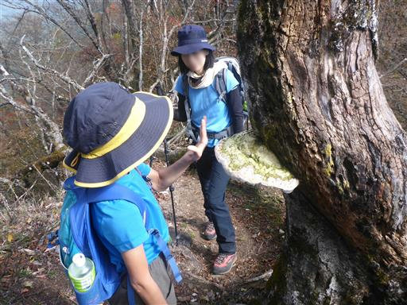
足元に咲くリンドウ。

紅葉の尾根道を進む。
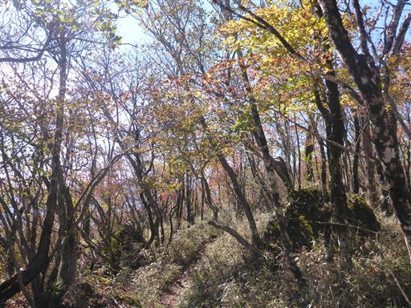
王岳山頂に到着する。標高1623m。
山頂からは見事な富士山の姿が望める。
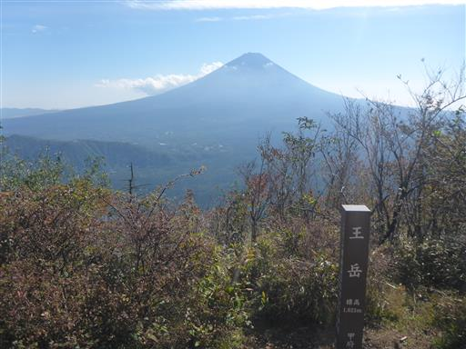
山頂はこじんまりしている。腰を下ろして昼食をとる。
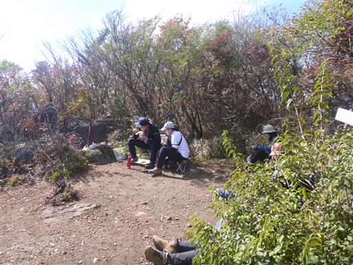
下山は鍵掛峠を経由せずに直接根場に下る道を選ぶ。
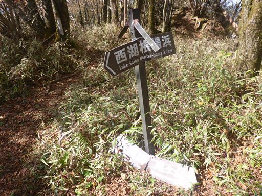
そこそこ急な斜面をどんどん下る。
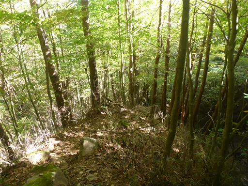
下山。ここからは長い長い林道歩きだ。
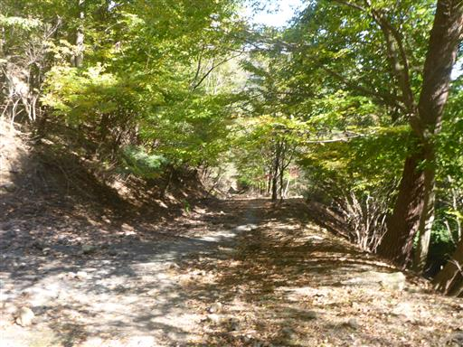
息子がなぜか土の斜面に惹かれて登り出す。
機嫌が悪かったので好きなようにやらせておく。
靴の中が砂だらけになりそうだ。
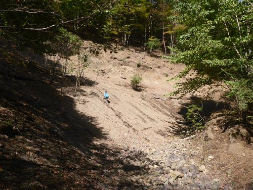
長い林道を歩いて根場に戻ってくる。
ススキの原の背後に富士山が聳えている。
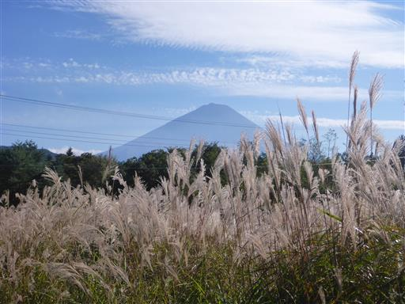
駐車場に戻ったら根場を少し探索。
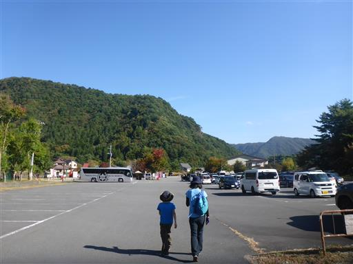
見上げると、青空に美しい雲が2本流れている。
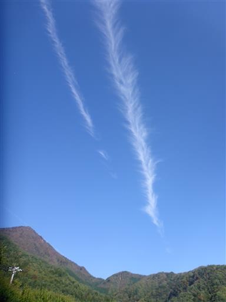
売店でソフトクリームを買って食べる。
今日はこの季節にしては非常に気温が高く、標高が高いこの場所でも暑いくらいだ。
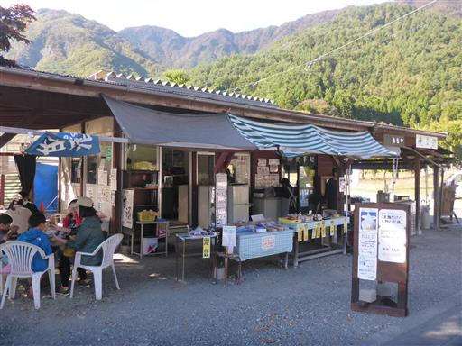
アスファルトの上を見慣れない虫が歩いている。
なんという虫だろう？
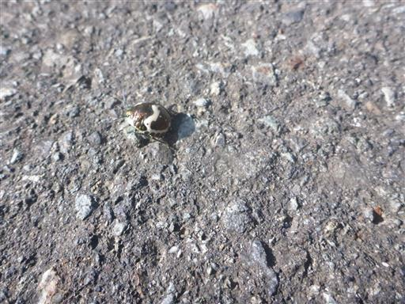
駐車場に戻って帰宅の途につく。
帰りは中央道の渋滞を避けて東名に向かったが、事故渋滞でひどい目にあってしまった。
王岳は、登山道は全般的に地味だったが、富士山の近くにある山だけあって、
素晴らしい富士の展望を楽しむことができた。
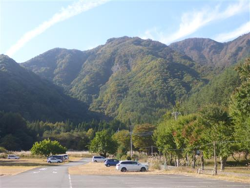